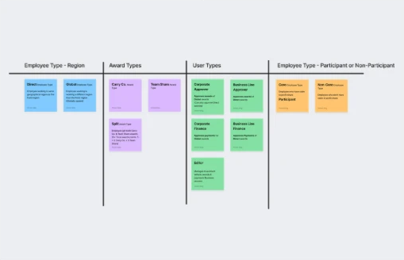
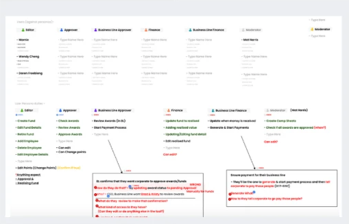
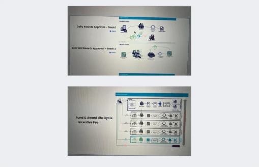

Data discrepancies
Stakeholders kept separate versions of information, creating inconsistencies that needed time-consuming reconciliation.
By improving stakeholder visibility and coordination across a complex, multi‑stakeholder process — preventing the delays that create tax liability.
Stakeholders around the world managed a complex business process (GIFA), working on overlapping tasks with limited visibility into each other’s decisions and progress.
Stakeholders kept separate versions of information, creating inconsistencies that needed time-consuming reconciliation.
Stakeholders lacked clear updates on task progress and changes made by others, making it harder to coordinate work and spot delays.
We received an initial brief that proposed solutions before the underlying user problems were understood.
To uncover the real challenges, we questioned the existing process, the stakeholders involved, their responsibilities and the difficulties they faced.
Stakeholders were occupied with other critical organisational matters, making it difficult to schedule time with them.
Once we’d mapped the stakeholders and workflows and secured their time, we made the most of every conversation by asking focused questions about workflows, responsibilities and pain points.



Errors and blockers sat unseen while editors were busy with other work.
Every change, comment and approval in one stream, with an alert when something stalls.
Finding out where a fund stood meant chasing people for updates.
Every step, owner and due date of a fund’s approval, visible at a glance.
Finding eligible awards meant filtering large spreadsheets by hand.
Saved criteria filter awards automatically and can be reused across funds.
One shared workspace replaced a fragmented, spreadsheet‑driven process. The results showed up in the very first award cycle.
in tax liability avoided in the first award cycle
faster from award allocation to final approval
of awards approved before the tax deadline
“For the first time, every stakeholder can see exactly where each award stands, and what’s holding it up.”